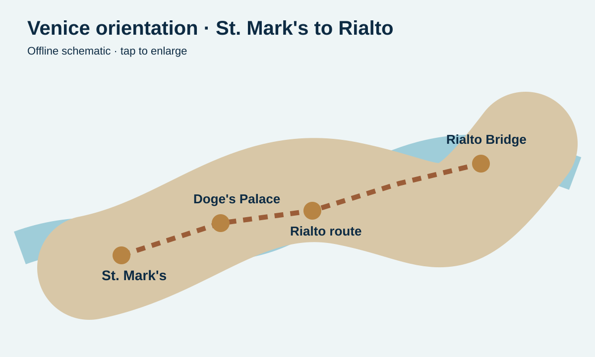
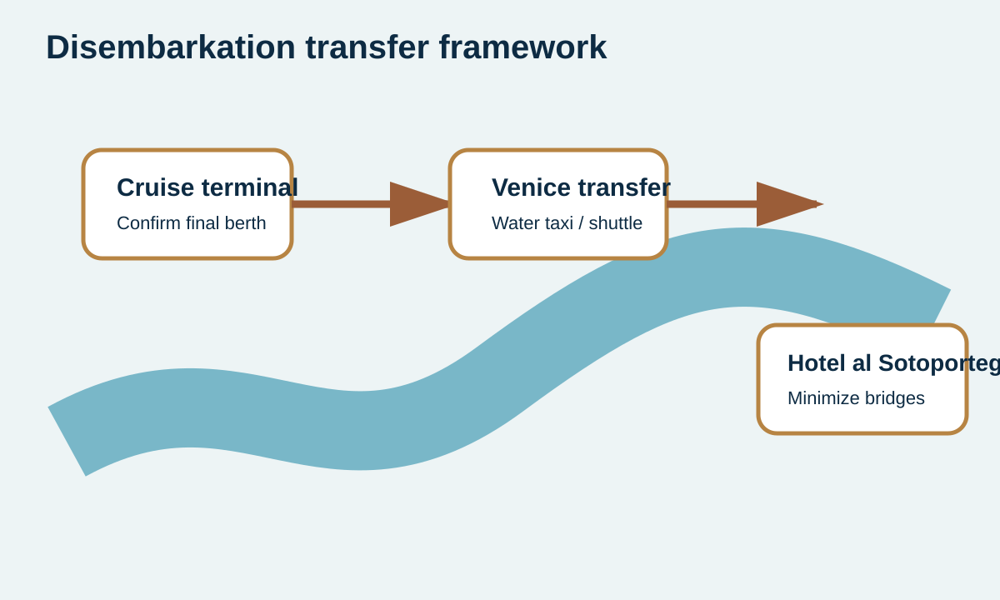

Venice Premium chapters
Aug 31Venice excursion
12:45 PMSt. Mark’s departure
4.3 hoursBooked duration
Sept 1Hotel handoff
Venice: final cruise chapter, first Italian chapter
Use this hub for St. Mark’s Square, the lagoon-side monuments, your post-cruise transfer, and the handoff into the Northern Italy companion.

Booked excursion
St. Mark’s at a Glance
Basilica, square, campanile, Piazzetta and crowd-smart pacing.

Signature chapter
Doge’s Palace & Bridge of Sighs
Exterior details, state power, prison route and the lagoon façade.

Offline maps
Maps & Routes
St. Mark’s loop, Rialto connection and hotel transfer framework.

Sept 1 transition
Disembarkation & Hotel
Luggage, terminal, Fusina, water transfer and Hotel al Sotoportego.

Visual guide
Photography
Lagoon light, arcades, canals, reflections and quiet bridges.

Continue the journey
Northern Italy Handoff
Venice stay, Verona lunch option, Como and onward travel.